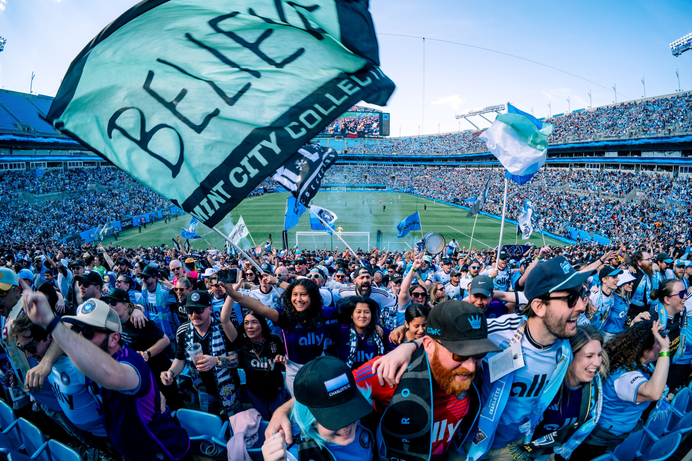

A Fan's Guide to Charlotte FC
Everything you need to know about Charlotte's major league soccer club.
by Arielle Patterson Jun 23, 2025

An electric energy fills the air at Bank of America Stadium when the Charlotte Football Club runs onto the pitch. With fans donning their process blue and black, it’s easy to get swept up in the excitement whether it’s your first or fiftieth match. If you’re ready to experience the thrill of Major League Soccer in Charlotte, here’s everything you need to know about attending a Charlotte FC match.
Charlotte FC Schedule & Promotions
Charlotte FC’s season runs from late February/early March through October, with a number of weekly specials, match-day promotions and theme nights throughout the season. The team welcomed fans for the home opener with limited-edition CLTFC snapback hats. Be sure to check the Charlotte FC promotions schedule for a list of giveaways by match, including t-shirts, an inflatable crown and more.